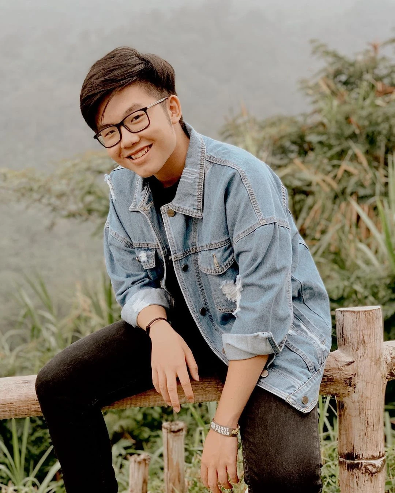

Nama Lengkap: Marvel Delvino
Channel YT: ElestialHD
Tanggal Lahir: 6 Mei 2002
Biografi
-
Marvel Delvino adalah seorang YouTuber dan konten kreator yang aktif di platform YouTube.
Dia dikenal dengan nama panggung "ElestialHD" di internet,
namun identitas pribadinya mungkin tidak terungkap secara luas.
Awal Karir
-
Marvel Delvino mulai membuat konten di platform YouTube pada tahun 2017. Awalnya, dia mungkin fokus pada jenis konten tertentu, seperti let's play, review game, atau hiburan komedi.
Jenis Konten
-
Konten Marvel Delvino bervariasi dari video-gameplay hingga vlog pribadi dan bahkan mungkin tutorial. Dia mungkin juga terlibat dalam kolaborasi dengan YouTuber lain atau berpartisipasi dalam acara-acara komunitas.
Pengembangan Karir
-
Seiring berjalannya waktu, Marvel Delvino mungkin terus mengembangkan dan mengubah jenis konten yang dia buat, menyesuaikan dengan perubahan tren atau minat pribadinya sendiri. Dia mungkin juga mengelola platform media sosial lainnya, seperti Twitter, Instagram, atau Discord, untuk berinteraksi dengan penggemar dan mempromosikan kontennya.